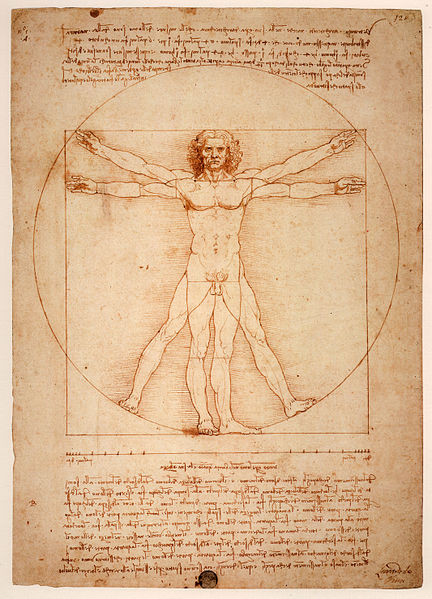
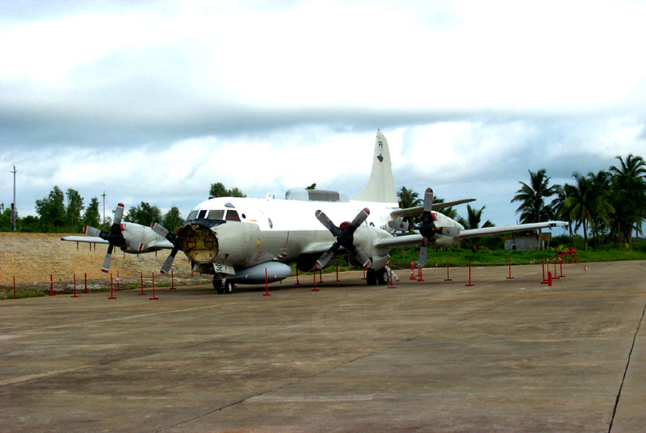
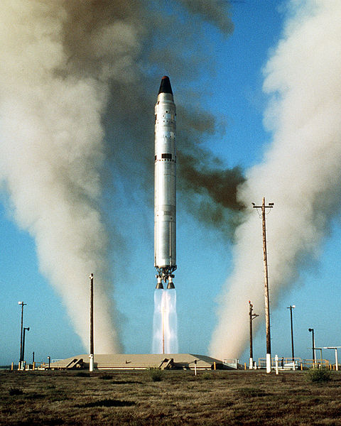
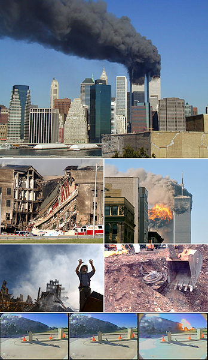
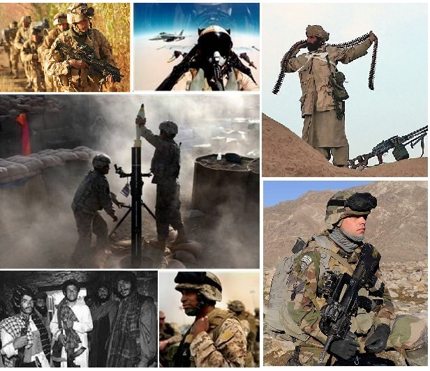
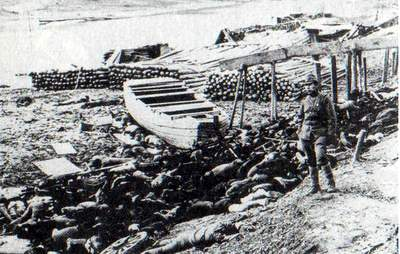
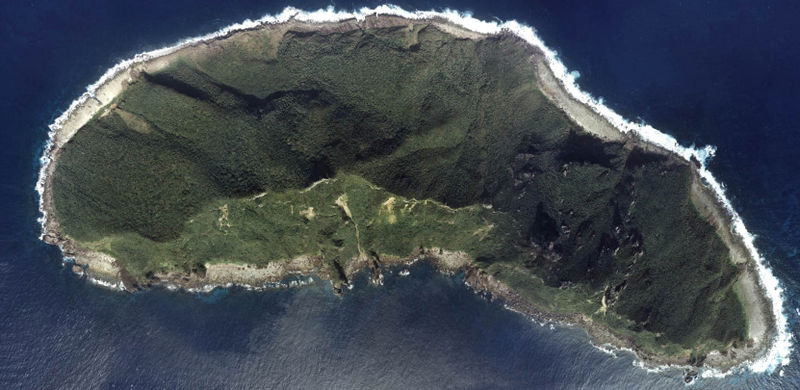
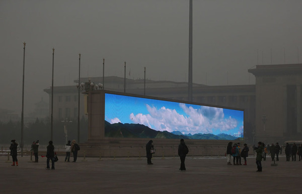
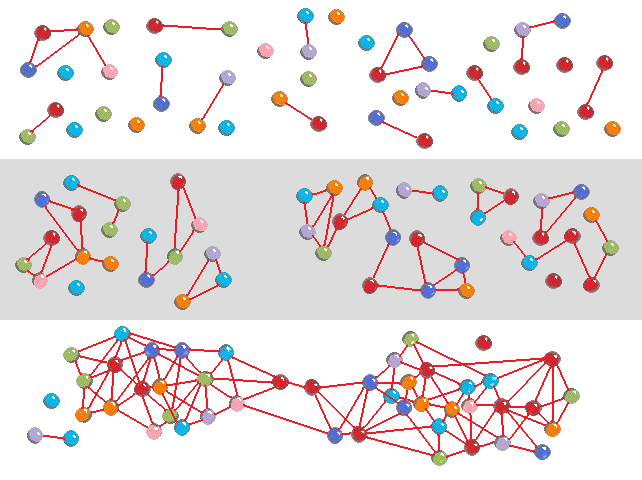

Ensuring Humanity's Survival
Ricky Ng-Adam
February 2nd 2013
Taking the side of the human race (no conspiracy)

https://en.wikipedia.org/wiki/Human
The other thing that happened in 2001

https://en.wikipedia.org/wiki/Hainan_Island_incident
China currently has 55 to 65 ICBMs

http://www.nytimes.com/2012/08/25/world/asia/chinas-missile-advances-aimed-at-thwarting-us-defenses-analysts-say.html?_r=0
Inflexion Point: 9/11

https://en.wikipedia.org/wiki/September_11_attacks
Diversion #1

https://en.wikipedia.org/wiki/War_in_Afghanistan_(2001%E2%80%93present)
Diversion #2

https://en.wikipedia.org/wiki/War_in_Afghanistan_(2001%E2%80%93present)
Diversion #3
https://en.wikipedia.org/wiki/List_of_Drone_Strikes_in_Pakistan
Japanese Trigger: Shintaro Ishihara
https://en.wikipedia.org/wiki/Shintaro_Ishihara
Chinese Trigger: Rape of Nanking

https://en.wikipedia.org/wiki/Rape_of_Nanking
Japan vs China contrasted with Germany vs France
In recent times, France and Germany are among the most enthusiastic proponents of the further integration of the EU. They are sometimes described as the "twin engine" or "core countries" pushing for moves.
https://en.wikipedia.org/wiki/France%E2%80%93Germany_relations
Diaoyu/Senkaku

https://en.wikipedia.org/wiki/Senkaku_Islands_dispute
Triggers = Violence
https://en.wikipedia.org/wiki/Senkaku_Islands_dispute
Nationalism
Nationalism is an infantile disease. It is the measles of mankind. - Albert Einstein
http://www.brainyquote.com/quotes/keywords/nationalism.html
Other end-game: environmental collapse

http://www.theatlantic.com/infocus/2013/01/chinas-toxic-sky/100449/
Space Gambit
Global Alliance of Makers Building Interstellar Technologies
To promote humanity’s survivability and expansion into the galaxy by building grassroots collaborative activities that encourage education and research related to space.
http://www.spacegambit.org/
Hackerspace Ambassador Program

https://en.wikipedia.org/wiki/Social_network
Sisters Hackerspaces
- signed up to each other mailing list
- cross-post between both lists when relevant
- met in-person and established a good personal relationship
- exchange the all-important stickers
- link exchanges
Thank you! 谢谢大家！